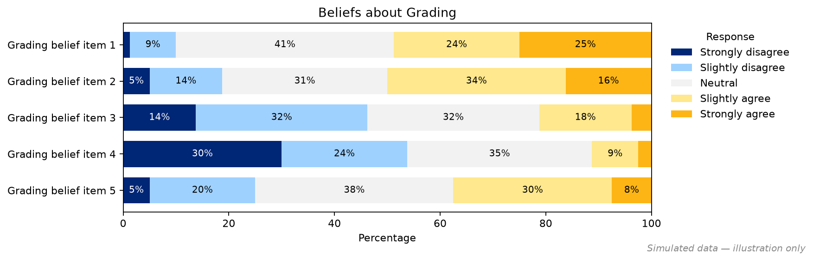
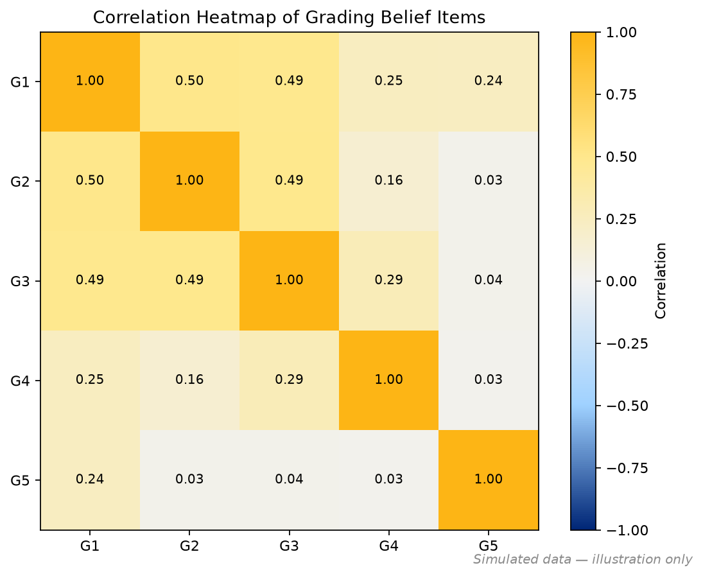
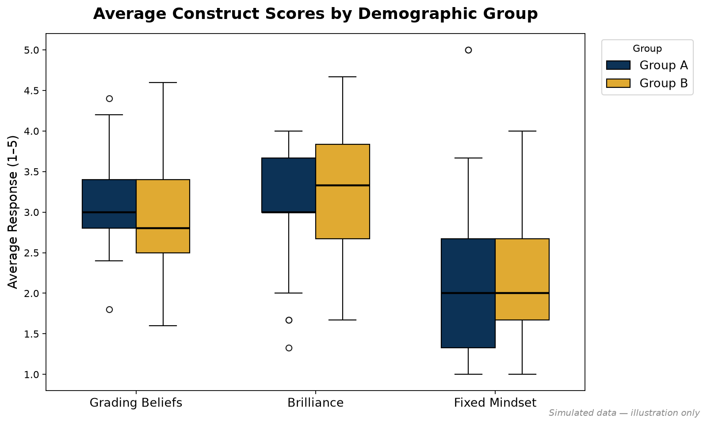

1. Encoding Likert responses
Responses were mapped to 1–5. One item in the “brilliance” construct is worded in the opposite direction (effort leads to success), so it was reverse-coded so that a higher score always means a stronger belief in innate talent.
likert_mapping = {
"Strongly agree": 5, "Slightly agree": 4, "Neutral": 3,
"Slightly disagree": 2, "Strongly disagree": 1,
}
likert_mapping_reverse = {label: 6 - score for label, score in likert_mapping.items()}
df_nums = df.replace(likert_mapping)
df_nums[reverse_col] = df[reverse_col].replace(likert_mapping_reverse)
df_nums = df_nums.infer_objects()2. Visualizing the distributions
A stacked horizontal bar per survey item, in a diverging blue-to-gold palette, makes it easy to compare agreement across items at a glance.

def plot_likert_bars(df, title="Likert Responses", wrap_width=45):
categories = ["Strongly disagree", "Slightly disagree", "Neutral",
"Slightly agree", "Strongly agree"]
colors = ["#002676", "#9FD1FF", "#F2F2F2", "#FFE88D", "#FDB515"]
# % of respondents choosing each response, per item
pct = pd.DataFrame({
col: df[col].value_counts(normalize=True).reindex(categories).fillna(0) * 100
for col in df.columns
}).T
fig, ax = plt.subplots(figsize=(11, max(3, 0.7 * len(pct))))
left = np.zeros(len(pct))
y = np.arange(len(pct))
for cat, color in zip(categories, colors):
widths = pct[cat].to_numpy()
ax.barh(y, widths, left=left, color=color, height=0.72, label=cat)
for i, w in enumerate(widths):
if w >= 4: # only label segments wide enough to read
ax.text(left[i] + w / 2, y[i], f"{w:.0f}%", ha="center", va="center")
left += widths
ax.set_yticks(y)
ax.set_yticklabels(["\n".join(textwrap.wrap(l, wrap_width)) for l in pct.index])
ax.invert_yaxis()
ax.set_xlim(0, 100)
ax.set_title(title)
ax.legend(title="Response", bbox_to_anchor=(1.02, 1), loc="upper left", frameon=False)3. Do the items measure one idea? Reliability and factor analysis
Each construct (grading beliefs, fixed mindset, brilliance) is measured by several items. I computed Cronbach's alpha to test whether a construct's items hang together, re-ran it with individual items dropped to find ones behaving differently, and checked pairwise correlations. For the five-item grading construct I also fit a one-factor confirmatory factor analysis to see which items best capture the underlying belief.
def cronbach_alpha(df):
k = df.shape[1] # number of items
item_variances = df.var(axis=0, ddof=1) # variance of each item
total_score_variance = df.sum(axis=1).var(ddof=1) # variance of summed score
return (k / (k - 1)) * (1 - item_variances.sum() / total_score_variance)
for name, cols in constructs.items():
print(f"{name}: alpha = {cronbach_alpha(df_nums[cols]):.3f}")
# does one item behave differently? drop it and recompute
subset = [c for c in brilliance_cols if c != innate_item]
print(cronbach_alpha(df_nums[subset]))from factor_analyzer import (ConfirmatoryFactorAnalyzer,
ModelSpecificationParser)
# One latent "grading beliefs" factor behind the five items
# (a 3-item construct gives a saturated model with no df to test fit)
model = {"GradingBeliefs": grading_cols}
spec = ModelSpecificationParser.parse_model_specification_from_dict(
df_nums, model)
cfa = ConfirmatoryFactorAnalyzer(spec, disp=False)
cfa.fit(df_nums[grading_cols].dropna().values)
loadings = pd.DataFrame(cfa.loadings_, index=grading_cols,
columns=["GradingBeliefs"])
display(loadings.round(3))
4. Comparing groups
Each respondent's construct score is the mean of its items. Joining those scores to demographic flags lets the same function draw side-by-side boxplots for any comparison: gender, first-generation status, income, or STEM vs. non-STEM major.

df_averages = pd.DataFrame({
"gradingbeliefs_mean": df_nums[grading_cols].mean(axis=1),
"brilliance_mean": df_nums[brilliance_cols].mean(axis=1),
"fixedmindset_mean": df_nums[fixed_cols].mean(axis=1),
}, index=df["Pseudonym"])
def plot_average_boxplots_by_group(df_averages, demo, group_cols, categories, title,
category_labels=None):
frames = []
for label, col in group_cols.items():
merged = df_averages.reset_index().merge(demo[["Pseudonym", col]],
on="Pseudonym", how="left")
group_df = merged[merged[col] == True][["Pseudonym"] + categories]
frames.append(group_df.assign(Group=label))
# long format: one row per (respondent, construct)
plot_df = pd.concat(frames).melt(id_vars=["Pseudonym", "Group"], value_vars=categories,
var_name="Category", value_name="Average Response")
sns.boxplot(data=plot_df, x="Category", y="Average Response", hue="Group", width=0.6)
plt.xticks(range(len(categories)), category_labels or categories)
plt.title(title)
# the same function handles every comparison
demo["Major_Type"] = demo["Major1"].apply(lambda m: "STEM" if m in STEM_MAJORS else "Non-STEM")